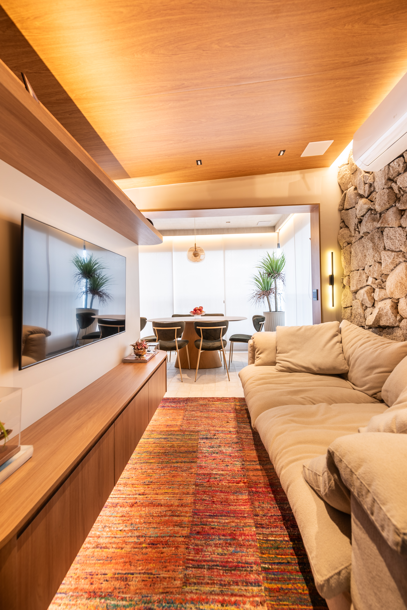
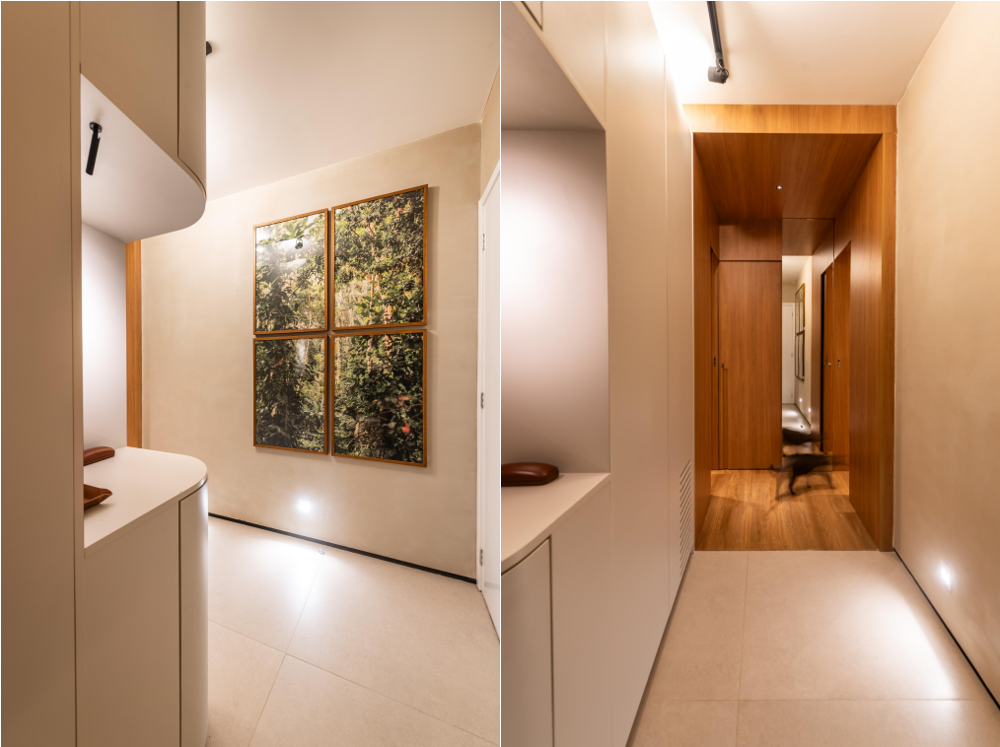
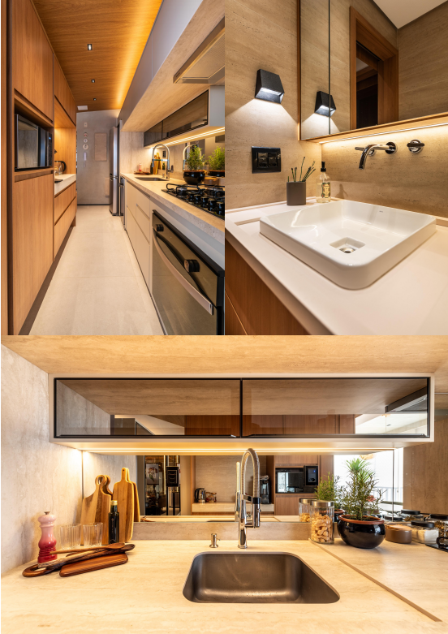
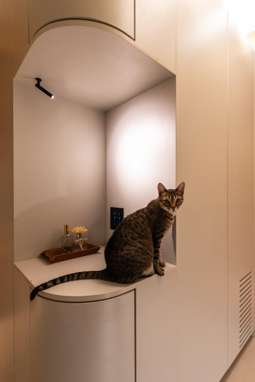
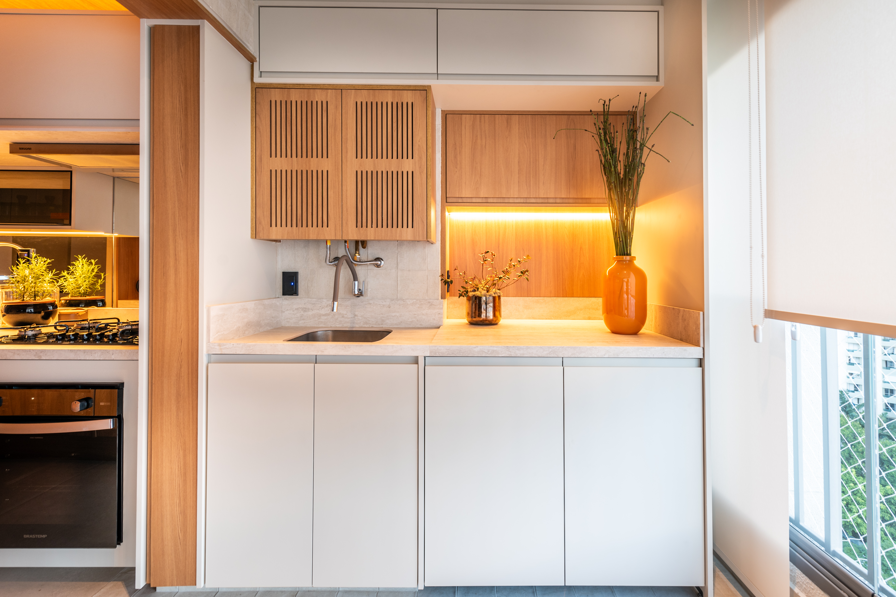
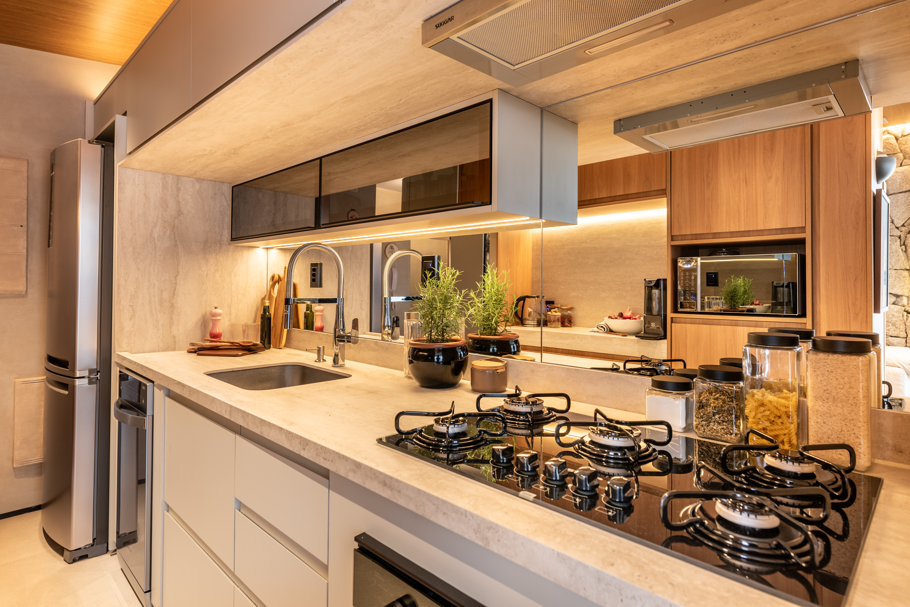
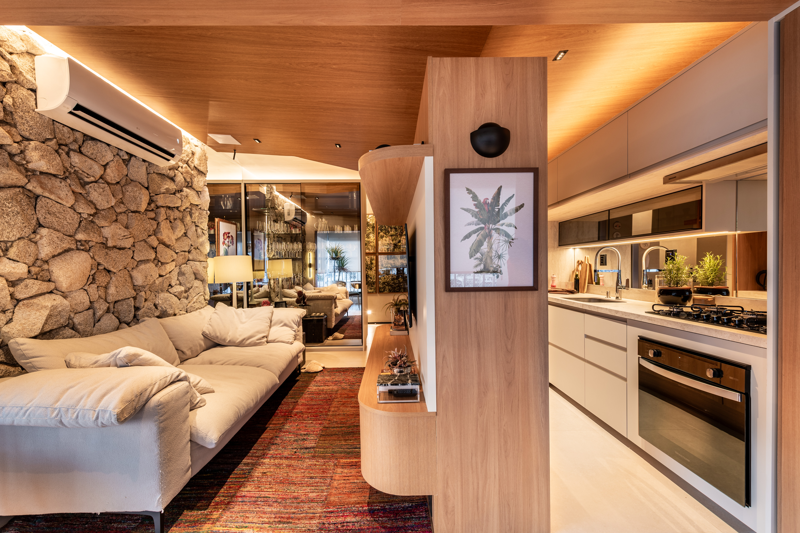
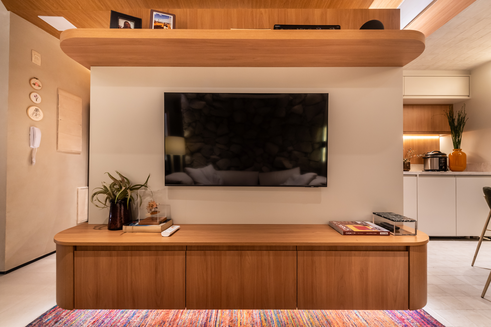
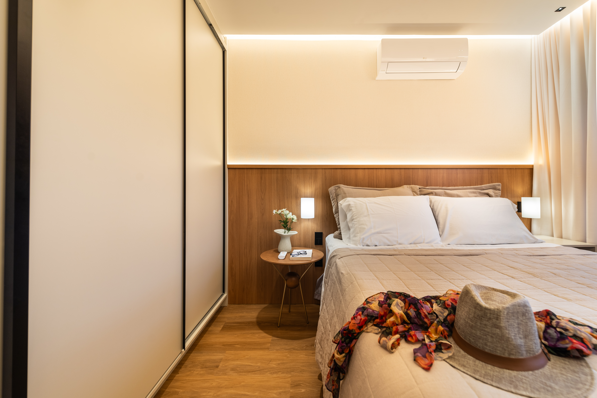

Visão geral
Arquitetura, materiais e luz em sintonia
Toda a iluminação foi feita com produtos Opus para acompanhar a arquitetura e reforçar a presença dos materiais sem excessos visuais.
O projeto de iluminação residencial Apê da Fê mostra como spots, fitas de LED e balizadores podem ser aplicados em um apartamento em São Paulo de forma coerente com a linguagem arquitetônica.
Com predominância de luz quente nos principais ambientes, a composição valoriza madeira, pedra e diferentes revestimentos, equilibrando permanência, conforto visual e leitura espacial.
ProjetoApê da Fê
ArquitetoFernando Pagani
LocalSão Paulo, SP
Ano2026

A luz como parte do projeto
Camadas de luz sem competir com a arquitetura
Na área social, a iluminação acompanha o desenho da arquitetura e ajuda a conectar visualmente sala e cozinha.
Fitas integradas
As fitas de LED aparecem integradas ao forro e à marcenaria, criando linhas de luz indireta.
Spots Soul
Os spots Soul entram de forma mais pontual, alinhados ao desenho do forro e direcionando a luz.
Camadas de iluminação
A combinação entre luz linear e iluminação focal cria profundidade sem tirar o protagonismo dos materiais.

Iluminação linear integrada à arquitetura
Luz linear acompanhando cada ambiente
As fitas de LED foram integradas à marcenaria, aos espelhos e aos encontros entre parede e teto.
A iluminação linear aparece em diferentes pontos do apartamento e sustenta uma leitura contínua entre apoio funcional e atmosfera acolhedora, sempre acompanhando o desenho da arquitetura.
No quarto, a luz linear percorre parte do perímetro e da cabeceira, enquanto os spots complementam a iluminação com pontos mais direcionados.
“A iluminação linear aparece em diferentes pontos do apartamento, acompanhando o desenho dos ambientes.”

Luz para valorizar materiais
Luz que valoriza materiais e percursos
O resultado é uma iluminação que evidencia melhor cores, texturas e acabamentos em cada ambiente.
Madeira e pedra
A luz reforça a presença dos materiais principais e ajuda a revelar sua textura com mais profundidade.
Revestimentos e tecidos
Diferentes superfícies aparecem com leitura mais nítida, preservando a atmosfera quente do apartamento.
Balizadores na circulação
Na circulação, balizadores criam uma iluminação mais baixa e ajudam a marcar o caminho.
Percurso orientado
A luz também foi usada para orientar os percursos pelo apartamento, apoiando o uso cotidiano com discrição.

Luz integrada aos detalhes
Luz linear em espelhos, nichos e marcenaria
A iluminação linear participa da composição e ajuda a manter unidade visual entre os ambientes.
No banheiro, a iluminação linear acompanha o espelho e a marcenaria, participando da composição junto aos tons de madeira, revestimentos claros e elementos em terracota.
Esse mesmo raciocínio aparece em apoios e nichos do apartamento, onde a luz entra como detalhe construtivo e reforça a leitura dos materiais sem se sobrepor à arquitetura.

Iluminação focal nos detalhes
Focos precisos para nichos e objetos
A luz pontual aparece em momentos mais precisos do projeto, criando contraste e profundidade.
O spot Lapiz foi usado para destacar pontos específicos do apartamento. Nesse nicho, o facho mais fechado direciona a luz para objetos e detalhes da marcenaria, criando uma iluminação pontual sem clarear todo o espaço.
Com 2700K, ângulo de 15° e IRC 90, ele ajuda a criar um efeito mais preciso e acolhedor, reforçando detalhes sem perder a atmosfera quente do projeto.

Diferentes soluções dentro do mesmo projeto
Cada produto com sua função
O apartamento mostra como um projeto residencial pode combinar diferentes tipos de luz de acordo com cada ambiente.
Em vez de uma única solução repetida por todo o apartamento, cada produto cumpre uma função dentro do projeto. A iluminação linear acompanha a arquitetura, os spots criam pontos de destaque e os balizadores trabalham a circulação.
O resultado é uma composição mais rica e silenciosa, em que cada camada de luz ajuda a organizar o uso, valorizar materiais e dar ritmo à experiência do apartamento.

